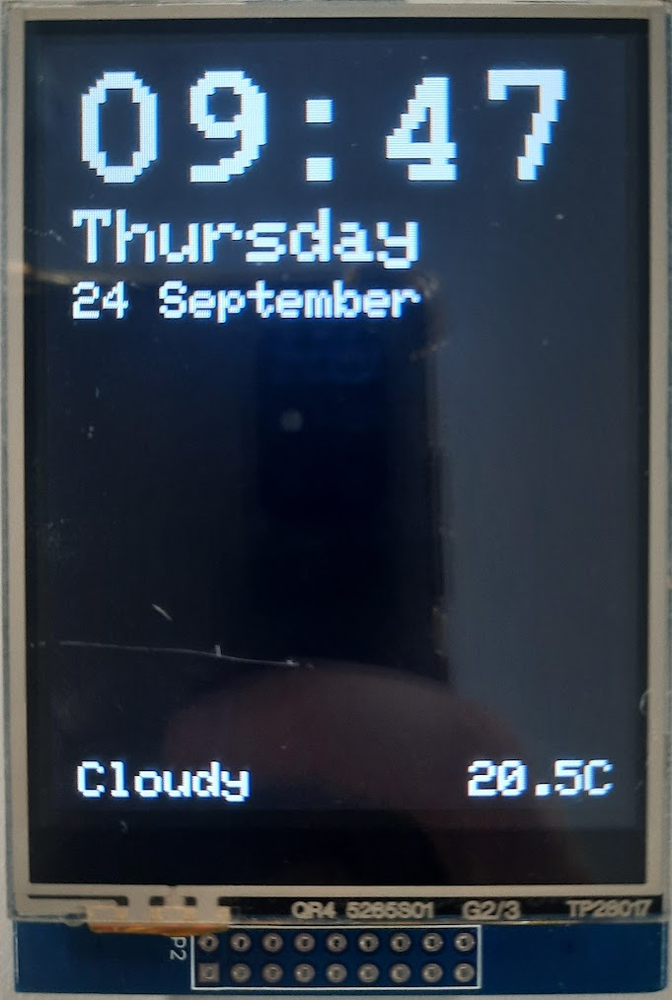
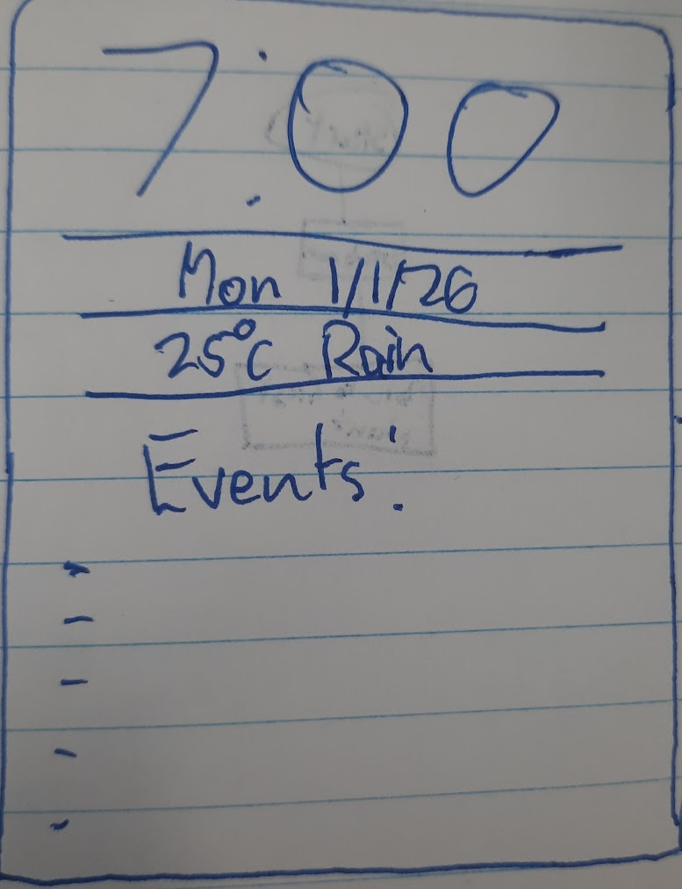
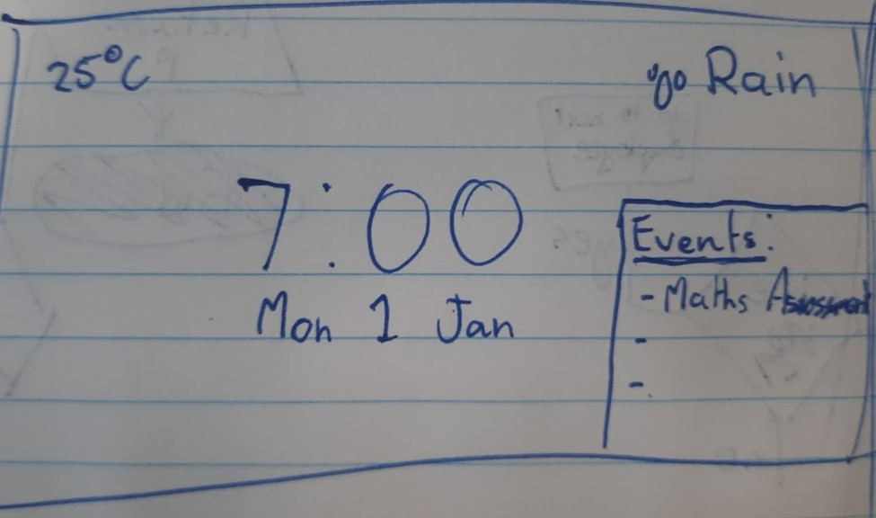
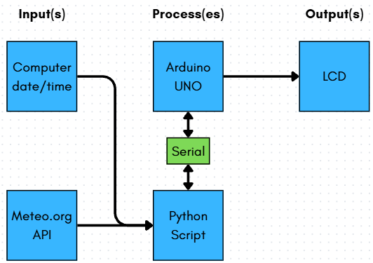

This is the page dedicated to showcasing my third project in the class: coding a functioning clock (and weather system) on an arduino LCD.
A lot of new topics were introduced in this unit that I understood pretty quickly. But the real test of that is my end result. I'm pretty happy with my final clock design. Compared to some of my friends’ designs, I feel like it is a bit lacklustre, but I'm still pleased with my simplistic design, and that the code is efficient and bug-free.


Out of my two sketches, I took more inspiration from the vertical one, but I still couldn't replicate everything perfectly. The most challenging elements that I overcame were the implementations of the weather and temperature data, which had to be sourced from the API and required much more complicated code than the time and day data. A couple lessons were spent perfecting the layout of the display, deciding the orientation, making sure it was readable but not cramped, and choosing a font and colour scheme that I liked. In the process of experimenting with fonts, with the help of Google Gemini, I discovered the underlying code behind fonts; a bunch of those 4-character strings that I'm not sure what they're called, but it was pretty interesting. I didn't quite push myself to my limit, and I may or may not have wasted a little time with my friends, but I also spent as much time helping them out, especially Will, and my end result is functional, aesthetically pleasing, and useful.
In the unit, I constantly found myself anxious to tackle another bit of the clock, like the temperature, because I thought I would just introduce bugs and irreparably damage my clock, because I didn't back it up with github. Ranking every string from easiest to hardest to code, it would be design, time, day/date, temperature, and weather. Conveniently in the order they were added. I feel kind of disappointed I couldn't achieve some things I originally planned to code, like withe calendar, where the python script would extract data from a designated file on my laptop, filled with important events and their dates, which would be sent to the arduino to display on the LCD. After tackling the weather with the help of Google Gemini (without copying and pasting, I typed it myself line by line), I definitely feel like I could've done the calendar, I just didn't have the time.


Going into the project, I felt a bit nervous. I had some experience with python and arduino code before, but it was mainly copying from an example, not learning how to code things myself. Looking back now, I have developed a much greater understanding of how to write code like this, how coding languages can differ so much, and even learn about flowcharts and APIs.
Overall, I think I learned a lot about all of these different elements that term and am excited to see what the future of the course holds.